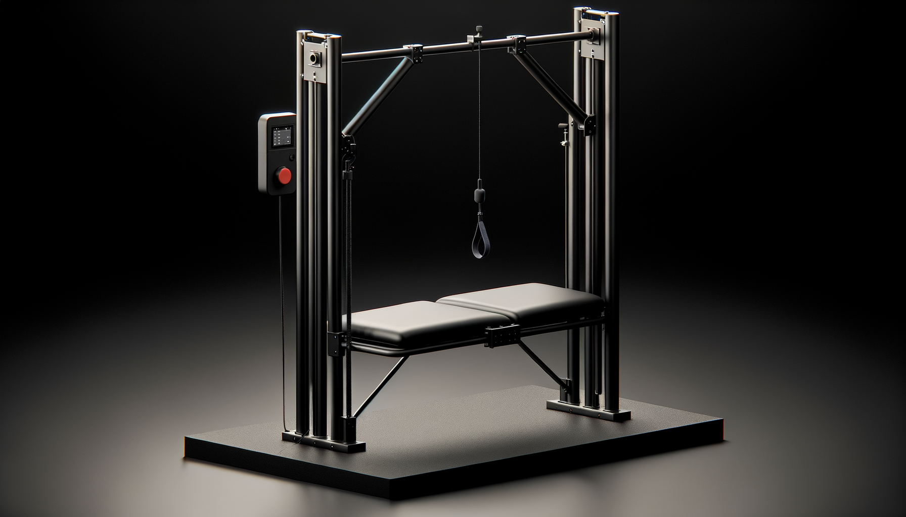
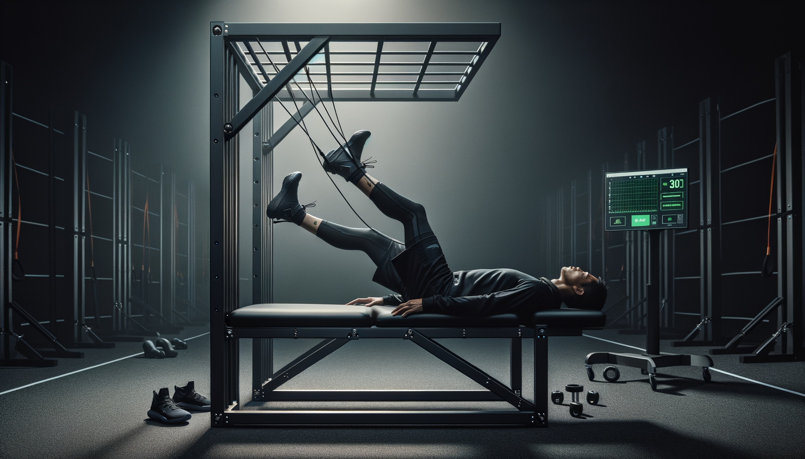
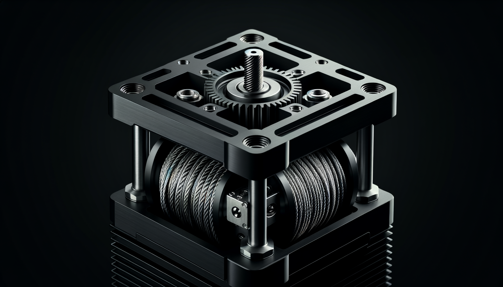
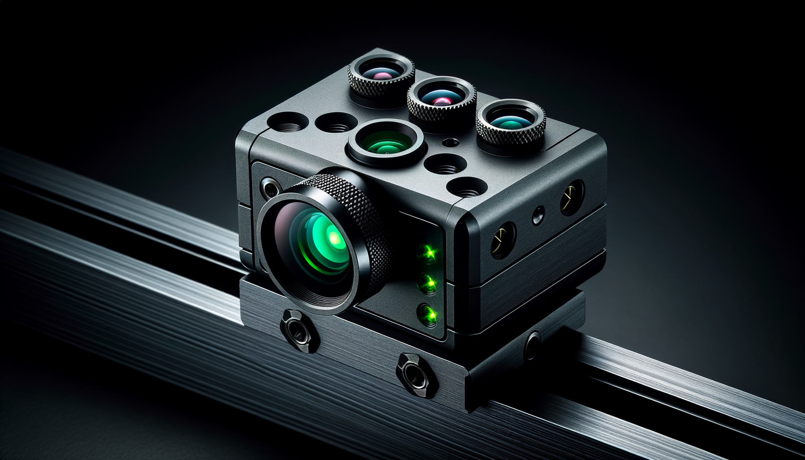
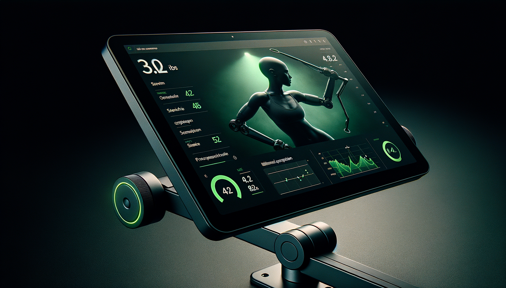
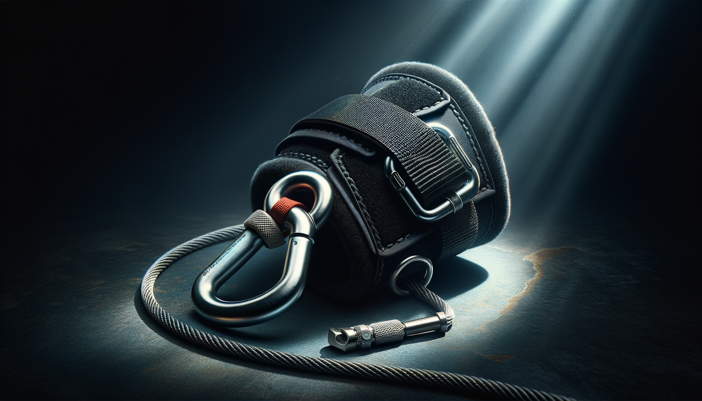

Modulor is actuarial infrastructure for musculoskeletal injury risk. A force-controlled cable platform with vision-based compensation detection captures range, load, and asymmetry on every rep. The hardware is the data layer. The data is the business.
Category
Stretching is the wedge. The product is a measurement and risk-pricing layer for musculoskeletal health — the category that sits next to force plates, GPS, and heart-rate variability, but for the variable everyone tracks by eye.
Every session produces a structured record of load, range, and compensation. Those records roll up into per-athlete risk signals that teams, insurers, and leagues can act on.
Who buys the output: performance staff (decisions), medical staff (return-to-play), insurers (premium pricing), leagues (athlete availability), and acquirers (data moat).
Who buys the hardware: pro and collegiate programs — leased, not sold.
The Hardware Layer
Modulor delivers assisted stretching through a motorized cable system with inline force sensing and depth-camera joint tracking. The athlete lies on a stabilized bench. A single cable applies progressive tension to the target limb at a precise, repeatable load.
The system measures peak range of motion at standardized force thresholds, compares left to right, detects compensation in real time, and logs everything — force at end-range, hold tolerance, guarding events, session-to-session ROM change.
Your staff selects the protocol. The machine handles the consistency. Every athlete gets the same quality stretch whether it's the first session of the morning or the twentieth.
What This Is Not
It's a cable and a bench with good sensors. The athlete is in control. They can release at any time. The system applies tension — it does not move limbs through space without resistance.
Your trainers still select protocols, supervise sessions, interpret data, and make decisions. Modulor removes the manual labor of delivering consistent stretch and the guesswork of measuring it. It makes your staff faster and better informed — not unnecessary.
It does not run a fixed program and call it done. It assesses baseline ROM, adapts intensity to the athlete's tolerance, detects when they're compensating, and tells you whether the protocol is producing change or just chasing end-range.
It does not diagnose injuries, prescribe treatment, or replace clinical assessment. It produces objective mobility data that your medical and performance staff can use to inform their own decisions.
The Machine
Open-front aluminum frame. 7 ft tall, 5 ft wide, 4 ft deep. The athlete walks in, lies on the bench, and is visible to staff at all times. No enclosure. No moving parts near the body except the cable.
Padded, adjustable bench with pelvis stabilization brace and contralateral leg anchor. Positions the athlete for supine, side-lying, or prone protocols. The stabilization is what makes the ROM measurement valid — without it, the athlete compensates and the data is useless.
Single Dyneema cable (200 lb rating). Routes from a motorized spool through a top-mounted pulley to the attachment point. Quick-release carabiner at the cuff. The cable applies tension — the athlete's body weight and gravity do the rest. No robotic arms. No actuated joints.
200W brushless DC motor. 20:1 planetary gearbox for smooth, high-torque, low-speed output. ODrive field-oriented controller. Backdriveable — if the athlete pushes against the cable, the motor yields. This is a compliance system, not a positioning system.
Inline load cell on the cable. 100Hz sampling. Measures tension to ±0.1 lb. This is the variable that controls the stretch — the PID loop targets a force, not a position. The cable doesn't pull the leg to an angle; it maintains a load and lets the tissue respond.
Intel RealSense depth camera mounted on the top crossbeam. Tracks 12 skeletal landmarks at 30fps. Calculates joint angle from hip, knee, and ankle positions. Detects pelvic rotation, trunk shift, and knee bend in real time. Accurate to ±2° in validated testing.
15" display at standing height. Shows protocol queue, live ROM and force readout, compensation alerts, and session summary. Staff-facing interface — not designed for the athlete to operate mid-stretch.
Five independent layers. Any one can halt the machine:
Total component cost for a single station: motor, gearbox, spool, pulley, load cell, depth camera, controller, frame, bench, touchscreen. No exotic parts. No custom silicon. Every component is commercially available and field-replaceable.
Why It Matters
A therapist's force varies rep to rep, athlete to athlete, morning to afternoon. Modulor applies the same load every time. That's what makes the data comparable.
Most training rooms have no objective record of an athlete's hamstring ROM last Tuesday — let alone a 4-week trend at matched force. Modulor generates that automatically.
Left vs. right compared at identical force, identical position, identical protocol. Differences exceeding 10% are flagged. Resolution is tracked over weeks. No eyeballing.
Your best therapist can deliver excellent manual stretch to maybe 4–5 athletes before fatigue changes their output. The machine doesn't fatigue. The 20th athlete gets the same session as the first.
Not "did we stretch today" but "is this athlete's tissue tolerance improving, is the asymmetry resolving, and are they ready for sprint exposure." That's what the session report shows.
When It's Used
Athletes with known restrictions or elevated risk run a 2-minute bilateral screen before training. If range drops or asymmetry increases, it's flagged before exposure.
If an athlete's hamstring ROM drops overnight, you want that before they sprint — not after.
15–20 athletes can run the same recovery protocol with identical load and execution. No degradation. No rushing. No variability.
Staff focuses on edge cases. The system handles volume.
Hip mobility before lower-body lifts. Ankle dorsiflexion before squat exposure. Adductor tolerance before lateral load.
If ROM doesn't support the session, you adjust.
Longer holds. Controlled loading. Tracked progression across weeks — not guesswork.
ROM vs. pre-injury baseline. Bilateral asymmetry. Guarding response. Tolerance under load.
"He's at 94% baseline, asymmetry under 8%, no guarding."
That's a decision — not an opinion.
The Session
Identify the athlete. Select the mode. Assess baseline ROM. Recommend a protocol. Execute under force control. Monitor tissue response. Advance or regress based on measured thresholds. Summarize for the coach.
NFC badge or ID entry. System loads profile, injury history, session log, last-known ROM baselines, and any medical restrictions.
Sport, goal, and schedule context determine the protocol family. Pre-game? Dynamic prep. Post-training? Recovery holds. Dedicated session? ROM gain with PNF. Staff can override.
Bilateral ROM screen at standardized force. Camera tracks 12 joint landmarks. System compares to last session and flags regressions or emerging asymmetries before the first stretch begins.
Based on mode, baseline, readiness input, and longitudinal data, the system recommends a stretch queue: which muscle groups, what order, what intensity. Staff confirms or adjusts.
Progressive tension ramp from slack to target force. PID loop holds cable load within ±0.2 lb. Depth camera logs joint angle at 30fps. Load cell logs tension at 100Hz. Compensation events flagged per rep. Contract-relax cycles cued when protocol calls for PNF.
Six variables tracked continuously: joint angle change under load, cable force stability, end-range hold time, compensation events (pelvis, trunk, knee), tolerance threshold approach, and pain/discomfort response. All logged at the rep level.
ROM still increasing at current force? Progress — advance tension 0.5 lb, extend hold. Tolerance threshold reached with no further ROM gain? Hold steady. Compensation count exceeds 2 in a set? Reduce force 15%. Pain response or E-stop? Immediate unload. Logic runs every 100ms.
Pre/post ROM delta per muscle group. Bilateral asymmetry change. Total compensation events by type. Tolerance threshold vs. previous session. End-range hold time trend. 4-week and 8-week ROM rolling averages. Coach report pushed to dashboard and AMS. Athlete sees ROM change and asymmetry status on screen.
Problems It Solves
Most teams track force, speed, and load. Almost none track flexibility with usable precision.
Stretch quality varies by therapist, time of day, and fatigue. The system removes that variability.
A 10% difference matters. Manual tools can't reliably detect it.
You have strength data. You have load data. You don't have mobility data. That's a gap.
Programs are prescribed. Outcomes are assumed. Modulor closes that loop.
Who Pays
Lease the hardware. Consume the reports. Protect guaranteed contracts.
License risk signals. Price musculoskeletal premiums on evidence, not actuarial tables.
Roster-level availability models. Standardized injury reporting.
Hyperice, Therabody, Catapult, Nike — embed our data in their stack.
Athletes & Coaches
Two 1-page briefs. Pick yours.
FAQ
We claim ±2° — but you shouldn't take our word for it. Here's how it works: the Intel RealSense D435 depth camera captures a 12-point skeletal model at 30fps. Joint angles are computed from 3D coordinates using arctan2, not 2D projection. That eliminates the parallax error that kills phone-based goniometry apps. In our internal testing against manual goniometry by a licensed AT, test-retest reliability is under 1.5° for hamstring SLR across 200+ reps. If the system loses skeletal tracking — athlete shifts off bench, clothing occlusion, sweat reflection — it flags the rep as invalid rather than reporting a bad number. No silent failures. Every measurement ships with a confidence score. Ask us for the raw validation data — we'll send it.
We built this for 6am pre-practice, not a research lab. The workflow is: athlete badges in (system loads their profile and last session's data automatically), selects their stretch protocol from the touchscreen, lies down, and the machine runs. No calibration step. No dedicated technician. No laptop. Setup to first stretch is under 45 seconds. Your GA can run it. Your athletes can run it solo after one walkthrough. The depth camera auto-calibrates on boot. The cable auto-tensions to zero before every session. If a device requires a PhD or a 20-minute setup ritual, it'll collect dust by October — we designed around that reality from day one.
This is the question that matters most, so here's the full answer. Five independent safety layers, each of which can halt the stretch on its own: (1) Software force cap — a hard ceiling set by your medical staff, cannot be overridden by any protocol, enforced in <10ms. (2) PID compliance loop — the motor controller tracks the force setpoint at 100Hz and auto-reduces on any overshoot. (3) Mechanical slip clutch — if cable tension exceeds 35 lb for any reason (including software failure), the spool physically slips. No electronics involved. (4) Mushroom E-stop — hardwired motor kill, accessible to both staff and athlete, cuts power in <50ms. (5) Quick-release cuff — the athlete can disconnect from the cable instantly with one hand. For return-to-play athletes, your PT or AT sets per-athlete ROM ceilings and force limits in the system. The machine will not exceed them, period. If the depth camera detects compensation — pelvic rotation, knee bend, trunk shift — it automatically reduces tension before the athlete is at risk. That's not a safety claim. That's a real-time biomechanical feedback loop.
In-season downtime is a non-starter — we get it. The service model is built around that reality. If a repair takes longer than 48 hours, we ship a loaner unit. But most failure modes never get there: cable wear is the most common maintenance item, and it's a 10-minute swap your equipment staff can do with a hex wrench and a replacement spool (included in the service kit). Depth camera drift triggers an automatic recalibration routine — no technician required. The motor controller runs self-diagnostics on boot and flags anomalies before they become failures. Load cell calibration is a one-button check. We designed the hardware for field serviceability, not factory returns. The only scenario that requires us on-site is a motor or gearbox replacement, and those are built to last 10,000+ hours of continuous operation.
Fair question — and the honest test is simple: if you gave your staff an extra hour per day instead of this machine, would they produce the same outcomes manually? If yes, you don't need it. But here's what manual stretching can't do: apply exactly 12 lb of tension to a hamstring, hold it for exactly 30 seconds, measure the joint angle to ±2°, compare it to the other leg at matched force, log all of it, and repeat that identically across 60 athletes and 180 sessions per week. That's not a technology pitch — it's a measurement and consistency problem that human hands physically cannot solve at scale. Manual goniometry has 5–10° of inter-rater error. Staff fatigue over 4-hour stretch blocks is real. And nobody is tracking longitudinal ROM trends on a clipboard. If those gaps don't matter to your program, this isn't for you. If they do, nothing else on the market closes them.
Modulor pushes session data to your existing athlete management system via REST API — Smartabase, Kitman Labs, Catapult, or any custom platform your IT team runs. No manual CSV exports. No copy-paste. The moment an athlete finishes a session, the report (ROM, force, asymmetry, compensation flags, tolerance threshold) is available in your AMS within seconds. Athlete profiles sync both ways: roster changes, injury flags, and return-to-play protocols flow from your system into Modulor so staff never have to enter the same information twice. If your AMS isn't on our integration list, we build the connector during onboarding — it's a standard REST endpoint, not a custom software project. Your data lives in your system, under your control. We store session data on-device and in the cloud for trend analysis, but your AMS is always the system of record.
Six weeks. Your training room. Your athletes. Your schedule. We install the unit, train your staff (takes about 30 minutes), and get out of your way. During the trial, you'll run real protocols with real athletes — pre-practice screening, post-practice recovery, return-to-play progressions, whatever fits your program. At the end of six weeks, you'll have longitudinal ROM data on every athlete who used it, bilateral asymmetry trends, and session-over-session flexibility gains (or not). That data either makes the case or it doesn't — and we're fine with that. We don't expect anyone to buy from a website or a pitch deck. We expect them to buy after their head AT says "I need this in here permanently." If the trial doesn't produce that reaction, we take it back. No obligation, no residual fees.
What Makes It Get Bought
Not demos. 6 weeks in a real training room.
One athlete. Full timeline. Data alongside force + GPS.
Own the system. Own the data.
No setup friction. No extra staff. No complexity.
The Platform



Brushless DC motor through a planetary gearbox for smooth, high-torque, backdriveable cable control. ODrive FOC controller at 100Hz.

Structured-light depth camera for 12-point skeletal tracking at 30fps. Detects compensation, measures ROM to ±2°.

Real-time force graph, joint angle tracking, bilateral comparison, and session progress. Dark UI with green accent data.

Padded neoprene cuff with carabiner quick-release. Athlete can disconnect instantly. Rated to 200 lb.
Athlete scans their ID. System loads profile, injury history, and previous session data.
Staff selects protocol based on training context. Post-game recovery — intensity ceiling auto-adjusted.
Standardized passive SLR at 8 lb each side. Objective bilateral comparison.
R Hamstring SLR with PNF overlay. 3 sets, 30s hold, 8 lb peak.
Cable tension ramps. PID loop maintains constant force as tissue yields.
Compensation detection active. Force variability tracked. Tissue tolerance assessed.
System recommends: advance to PNF contract-relax for sets 2–3.
Full session logged. Bilateral comparison updated. Trend analysis ready for staff review.
What It Measures
Peak passive ROM at standardized force thresholds via depth camera + cable geometry. Accurate to ±2°. Comparable across sessions, testers, and athletes.
Inline load cell at 100Hz. Logs progressive tension ramp, peak force at end-range, and force variability during hold. Indicates tissue stiffness, not just range.
Left vs. right comparison at matched force thresholds. Flags differences exceeding 10%. Tracks asymmetry resolution across sessions — documented, not eyeballed.
Duration the athlete sustains peak ROM without retreating. A neuromuscular tolerance metric — measures relaxation response and stretch acceptance under constant load.
12-point skeletal tracking identifies pelvic rotation, trunk lateral flexion, and knee bend during stretch. Compensation events logged with timestamp, type, and magnitude.
The force at which ROM stops increasing — the athlete's neuromuscular limit for that session. Tracked longitudinally. A rising threshold means the tissue is adapting.
Athlete tap-out, verbal cue, or system-detected guarding behavior (sudden force spike + ROM reversal). Logged per rep. Used to auto-regress protocol intensity.
The force-time curve from slack to end-range. Characterizes how the tissue takes up load. A steep ramp with early plateau suggests stiffness; a gradual ramp suggests compliance.
Rolling 4-week and 8-week averages at matched force. Separates acute stretch response from chronic tissue adaptation. The number that tells you if the program is working.
Built for the Questions You Ask Every Day
These are the decisions your staff makes every morning. Modulor gives them measured answers instead of clinical guesses.
Bilateral ROM comparison at matched force thresholds. Flags differences > 10%. Tracks resolution week over week. You see the number, not a therapist's impression.
Force at end-range compared to last session. If the athlete tolerates 8.4 lb today at 72° vs. 7.6 lb at 70° last week, tolerance is up. That's tissue adaptation, not just acute stretch.
Baseline assessment compares today's passive abduction ROM to the athlete's own rolling 4-week average. A drop of 4°+ triggers a flag before training begins.
Hamstring SLR ROM within 5° of their own baseline. Bilateral asymmetry under 10%. No protective guarding events in today's assessment. No abort triggers. If all four pass, the system shows green.
Protective guarding = sudden force spike + simultaneous ROM reversal. The system detects it per rep, logs frequency, and compares to previous sessions. Rising guarding frequency is a warning signal — even if ROM looks fine.
Depth camera tracks pelvic rotation, anterior tilt, and lateral shift during every stretch. Compensation events logged with magnitude. If the pelvis moves more than 5° during SLR, the reported ROM is adjusted — or the rep is flagged as compromised.
The system separates acute stretch response (today's session gain) from chronic adaptation (4-week rolling average). If ROM gains aren't holding session to session, the protocol isn't working — and the data shows it.
Session Report
This is the output. Not a graph wall — the specific numbers that drive today's training decisions.
V1 Stretch Library
V1 covers the patterns where a single cable, a stabilized bench, and a depth camera can deliver repeatable, instrumented stretch with high confidence. These are the stretches that matter most and are hardest to standardize by hand.
Supine. Ankle cuff. Single cable lifts leg. Pelvis braced. The gold-standard hamstring assessment and stretch — and the hardest to keep consistent across 20 athletes by hand.
Supine. Ankle cuff abducts leg. Contralateral leg anchored. Pelvis braced laterally. Clean single-plane movement with reliable compensation detection.
Side-lying. Thigh cuff extends hip. Pelvis braced anteriorly. Single-plane hip extension — controllable, repeatable, and directly relevant to sprint mechanics.
Available on all V1 patterns. 5s isometric against cable, load cell confirms contraction quality, 30s passive advance. 3 cycles per group. Exploits post-isometric relaxation for chronic ROM gains.
Supine, knee flexed 90°. Requires rotational cable routing and controlled rotation tracking. High clinical value — hip rotation asymmetry is one of the strongest predictors of lower extremity injury.
Requires foot plate attachment and dorsiflexion-specific cable geometry. Critical for squat depth, landing mechanics, and Achilles load management. Standardized knee-to-wall equivalent.
Seated or side-lying. Requires trunk harness and rotation tracking through depth camera. High value for throwing athletes, rotational sport athletes, and desk-worker populations.
Staff Dashboard
All athletes sorted by bilateral ROM difference. Filter by muscle group, position group, or injury status. The names at the top of the list get attention first.
Athletes whose rolling 4-week ROM average dropped 3°+ in any tested pattern. Automatic flag. You see it before the athlete reports tightness.
Hamstring SLR within 5° of baseline. Asymmetry under 10%. Zero guarding events in today's screen. Zero abort triggers. Green / yellow / red — one glance.
Protective guarding events per session, trended over time. A rising count — even with stable ROM — means the athlete is working harder to tolerate the same stretch. That's a signal.
Chronic ROM change (rolling 8-week) vs. acute session gain. If session gains aren't consolidating into chronic change, the protocol isn't producing adaptation. The data shows it plainly.
Involved vs. uninvolved limb ROM at matched force. Progress as percentage of pre-injury baseline. Objective documentation for the physician who has to sign the clearance form.
Modulor is in prototype development. We're partnering with performance staffs for beta testing. If you run a collegiate, professional, or Olympic training room — let's talk.
For performance directors, head ATs, and sports medicine staff.